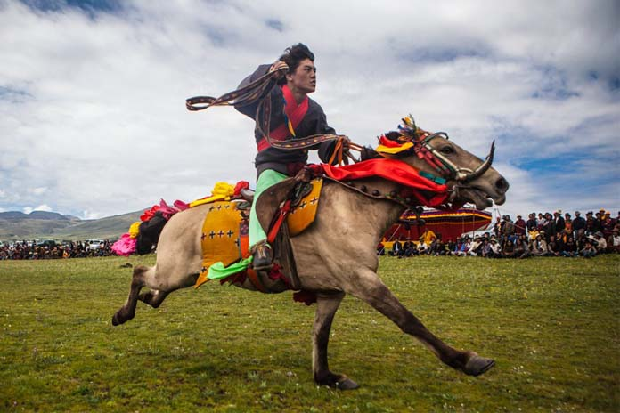
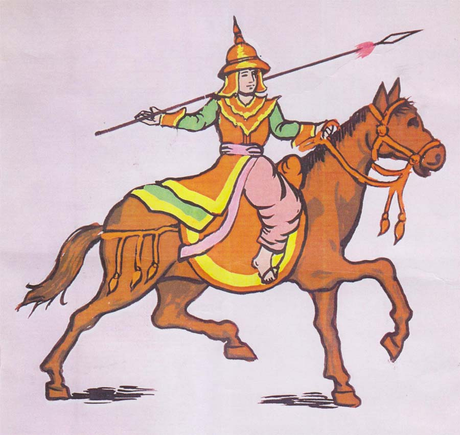
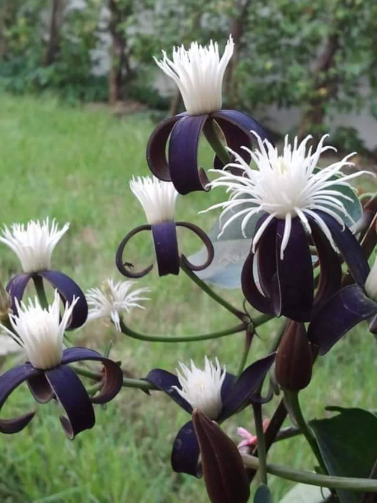

Pyathou(Pyatho) : January
Written by Khin Myo Chit and Junior Win ( Flowers & Festivals )
10.Phathou(Pya-thoh)
The silver moon Canda and
the stars Cancri, fellow-travellers now,
spread their bright rays in the clouds, br shine brilliantly side by side, br and travel on.
Magnificent
the emerald forest palace. br Fresh, green and moist,
the Clematis buds strangely
and bloomw forth wondrously.
Pyathou(Pyatho)
Pyatho is completely free from rains.Just sunny days, and cool, drew-drenched nights.The festival seson, ushered in by Thadingyut (October) - the end of lenten austerities, monsoon and hard grinding work in the fields, - is on full swing.Most of the pagoda festivals are celebrated during the month.
This means long winding rows of stalls wherein products of various localities are displayed for sale: glazed earthen wares, boces, basket made of cane , bamboo or palm fronds, hand-woven cotton pieces in bright colours; all the things attractive,useful and decorative.It is a good time to shop for cotton wool fillings for pillows, cushions and mattresses.
These stalls shift from one festival to another and they are part of the pagoda festivals as are the merry-go-rounds, ferris wheels and musical shows.In rural areas, tradespeople move from place to place in bullock carts of boats.For them it is a time for clan gatherings; friends and relatives meet on the festival grounds in happy reunion.
Such is the ingenuity of the people that they go on pleasure trips to places, make good business, meet people, and gain merit for the hereafter by paying respects to elderly relatives and making offerings for the repair and upkeep of the pagodas.
In the days of the Myanmar kings, this month is the time for military displays. The Four Elements of War, namely, chariots, infantry, cavalry and unit of war elephants were turned out in fill colour and glory.Horse racing, polo matches, war dances featuring swords, spears and shields were attended by boisterous music.
One of the thrilling events was the shield dance with the music of the brass gongs in attendance. Members of the gong regiment, as the military music troupe was called, were virile, fleetfooted and full of the joy of life.Their war-like spirit was tempered with love of nature, that moved them to sing rapturously of the idyllic surroundings, the golden pagoda on the hill, the meandering rivers nad flowing woodlands.
Here is the shield dance song written in 1343 by king Ngar-si Shin Kyaw-swa, who led the dance himself:
We belong to the good-regiment,
Are you true sons of valiant fathers?
True,true.
We see a pagoda at hand,
Is it the Buddha of the Holy hill?
Reclining Buddha.
The Thindwe canal floods and flows.
Is it a river, a roaring river?
Roaring river.
Even as the war cries and music of the gongs blended with the roar of the rushing waters of Thindwe canal, men turned their eyes towards the royal city, the many-towerd Myinsine, that had defied the invading forces:
City walls are on all sides,
Are these the battlements?Are these the towers?
Bettlements:
The palace floor is of strong timbers.
Can elephants tread on them?
Tread on them.
Then the memory of the Tartar invasions of yesterday and the valour of the bowmen who defended their homeland was honoured in the actionpacked lines.
The Tartars came:Horde upon horde.
Horde upon horde.
Arrows rained, shower upon shower,
Shower upon shower.
Vultures filled the field. Month upon month. br Month upon month. br A multitude of cavalry, round and round.
They never won.
Lightning flashed, in the gathering gloom. br In the gloom.
The clouds were dark. Were they dark ? br Very dark.
Rain followed the clouds. Did thunder roar?
Thunder roared.
It is interesting to note that mast of the war campaigns and military sports are found recorded in classical songs and poems. One other spectacle in military parades was the unit of elephants which formed the major strength of the armed forces.Royal princess were expected to master the art of riding and combating on elephant's back. One of the most challenging feats was how to manage a raging elephant.
One of the poems describes a viva voce between a prince and his instructor:
Instructor:
Strong and fierce, gallant and proud, the elephant defies you, my lord. Supposing you break the goad while striking the beast. So, with only the broken handle your stay, how would you manage the raging elephant?
Prince:
The elephant defies me and I only with a wooden handle broken, I will with aim straight and unerring, strike at the point between his eyes.Strike hard right and lift, until he turns round and round, his strength ebbing fast.This is how I shall win.
Instructor:
Suppose, even as you strike hard, you break the wooden shaft.Now,left only with your bare hands, what will my lord do?
Prince:
While on the back of a fierce raging elephant, I am left defenceless, without weapons. With my bare hands, I can still win. I will, with one quick movement, bend my body forward and thrust my fingers right into the eyes of the animal, until he reels and staggers helpless and weak with giddiness.This is how I shall win.
Perhaps, this month is the time to visit old Myanmar capitals like Mandalay or Bagan and browse over books of poems and songs, and work up your imagination to visualize the military displays and martial sports of the olden days.